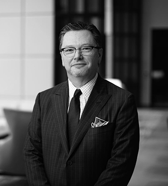
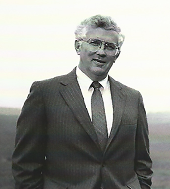
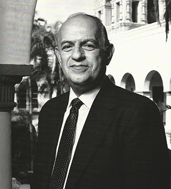
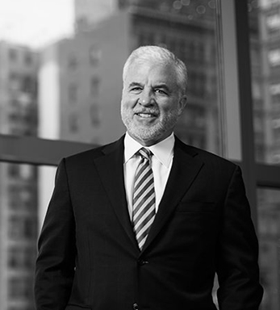

Focused
on the
Client.
Who We Are and What We Do
Galt & Company help Chief Executives and management teams of Fortune 500 companies develop strategies and organizational capabilities that deliver superior and sustain superior growth in shareholder value.
We have worked with some of the world’s best corporations and have been associated with some of the more notable corporate success stories of the last two decades. Our work impacts corporate and business unit strategies, resource allocation, performance management.
We bring the disciplines of the capital market inside a corporation and build the capabilities to effectively manage shareholder value growth deep within our client organizations.
Shareholder value contribution is always highly concentrated within markets and businesses. This concentration offers significant opportunity to better focus strategies and resources to improve returns and accelerate profitable growth. Through strategies and resource allocation, our clients develop a reinvestment advantage that leads to sustain competitive advantage and superior shareholder returns.
Through improvements in management capabilities, decision processes and standards, companies are able to those returns over for many years. We believe that outside advisors should build clients’ capabilities—not replace them.
Jim Kilts, former Chairman and CEO of The Gillette Company and Nabisco, is a friend of mine who turned around several companies. I asked him how he did this, and he mentioned that he used a particular firm—Galt & Company.
John Allison, former CEO, BB&T Corp.
Our Competitive Edge
We are the only top management advisory firm that helps its clients develop the capabilities to “win” in both the customer and capital markets…
1.
Winning in the Customer Markets – by developing differentiated business models that create more customer value and gain share of market profits
2.
Winning in the Capital Markets – by focusing resources on maximize sustainable returns, increasing re-investable cash flow and shareholder value
… and we have an unmatched track record of client success, with average sustainable client shareholder returns over 150% of their industry peer index.
Our approach is practical and tailored to each company’s unique requirements, based on our deep experience in helping some of the world’s best corporations across a range of industries.
Galt & Company partners are different from other top investment advisors—they deliver results, not just recommendations. They have had a tremendous impact on results and organizational capabilities.
Travis Engen, former CEO, Alcan and ITT
Our Leadership
Galt clients benefit from the combined experience of the firm’s senior leadership team (view here) and over thirty years of experience working with many of the world’s best companies and most accomplished Chief Executives, including:
Roberto Goizueta reinvented Coca-Cola, delivering annual total shareholder returns of 27 percent annually over his seventeen-year tenure.
Jim Kilts, as CEO, turned around the performance of three of the world’s most notable consumer brand companies: Kraft Foods, Nabisco, and Gillette.
Travis Engen transformed ITT Industries, increasing its shareholder value threefold before leaving to become chief executive of Alcan, where he doubled shareholder value within four years.
Sir Brian Pitman doubled the market capitalization of Lloyds Bank every three years over a fifteen-year time span.
John Allison and Kelly King, as a team, grew BB&T from a small North Carolina regional bank with $4.5 billion in assets to the tenth largest financial services holding company headquartered in the United States.
Don Knauss reenergized Minute Maid, reversed the erosion of Coca-Cola’s share of profits in North America, and went on to revitalize the shareholder performance of the Clorox Company.
Miles White, the CEO of Abbott Laboratories for the past thirteen years, has outperformed his peers in the health care and pharmaceutical industries.
Jim Umpleby, the new CEO of Caterpillar, transformed the company’s strategies, allocation of resources and performance management processes to deliver xx% shareholder returns in his first year as Chief Executive
Our consultants are well-versed in the theory and practice of microeconomics, corporate finance, corporate and business-unit strategy, management processes and organizational design and incentives.
Introducing our leadership team...

Lee Mergy
Senior Managing Director
Joe Shalleck
Senior Managing Director

M. Scott Gillis
Senior Managing Director
Anne Waehner
Senior Managing Director
Lee Mergy
Senior Managing Director
Lee Mergy
Senior Managing Director
Lee Mergy
Senior Managing Director
Lee Mergy
Senior Managing Director
Lee Mergy
Senior Managing Director

Lee Mergy
Senior Managing Director
Lee Mergy
Senior Managing Director
Lee Mergy
Senior Managing Director

Lee Mergy
Senior Managing Director
Lee Mergy
Senior Managing Director